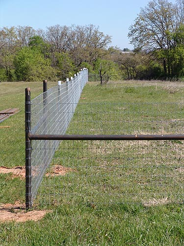

We missed out on the closing hunt because
of lightning and rain,
so, we kept the food til the next weekend
and had a picnic out at
the kennels.
It's the perfect place to bring young
horses for a relaxed introduction
to hounds and trail riding.
Jennifer introducing Kasza,
her horse, to the hounds.
Christina getting the dog hounds ready
to walk out.

Some of the new fencing out at the
kennels. Great for getting the puppies out and to assist with training.
The barn is looking better thanks
to members' hard work. There's a round pen for young horses to relax in
and get used to the noise of the hounds, and a few jumps in the woods to
get the horses ready for hunting.
Coming out of the kennels.
Holding the hounds is always good
practice.
Jennifer was out on one of her young
horses, Kasza.
Tami brought out Ernie to introduce
him to roading.
A nice relaxed atmosphere for the
horses.
Good exercise for the people on foot.
Bringing out the second group.
That's Mary Ann on Thuy.
It's nice to have the space and trails
to road through the woods.
The last hill to the kennels is the
hardest.
Working with the puppies.
Introducing the puppies to the scents
outside the kennel.
Erika got to take a pony ride while
the puppes were out.